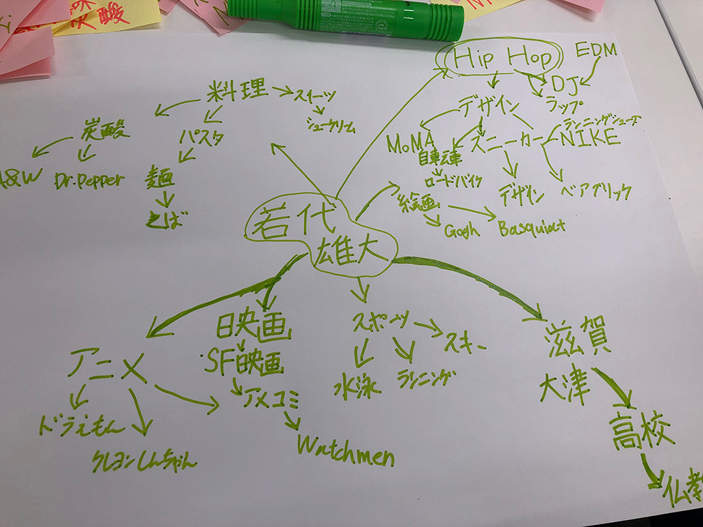
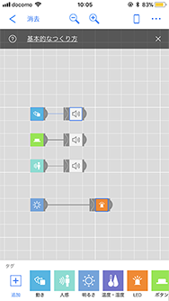

MESH
マインドマップを作成し、同じようなジャンルが好きそうな人たちでMESHの新たな使い方を生み出す。

ストリートカルチャー、身体に関するグループ

動きのセンサーと人感センサー、ボタンでギターなど反応すると楽器の音が出るように設定し、明るさのセンサーでLEDが点灯するように設定した。
音楽の演奏などに使えそうだと思った。
問題はうまく反応しなかったり、動かしてないときに反応したり誤作動のようなことが多かったから実用性はまだ低いと思う。
個人の貢献
いろんなセンサーの機能を試した。
MESHを組み立てた。